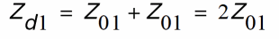
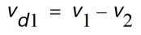
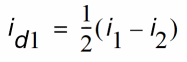
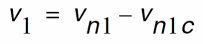
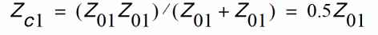
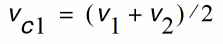
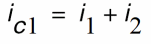
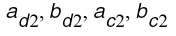
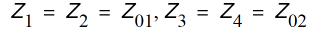

9
Modeling for Signal Integrity
The performance of an IC design is no longer limited to how many million transistors a vendor fits on a single chip. With tighter packaging space, and increasing clock frequencies, packaging issues and system-level performance issues (such as crosstalk and transmission lines) are becoming increasingly significant.
At the same time, with the popularity of multi-chip packages, and increased I/O counts, package design itself is becoming more like chip design.
This chapter describes the modeling capability the Spectre circuit simulator provides to assess signal integrity for your design, and describes
N-Port Modeling
When you model N-ports, you must first create a file listing the S, Y, or Z-parameters. Then you complete the modeling by using this file as input for an nport statement. You can create the S, Y, or Z-parameter file listing in two different ways.
-
You can run an
spanalysis and create a listing of S-parameter estimates automatically. -
If you already know the S-parameter values, you can create an S-parameter listing manually with a text editor such as
vi.
The S, Y, or Z-parameter data file describes the characteristics of a linear N-port over a list of frequencies. The format of the data file used by the Spectre simulator is flexible and self documenting. The Spectre simulator native format describes N-ports with an arbitrary number of ports, specifies the reference resistance of each port, mentions the frequency with no hidden scale factors, and allows the S-parameters to be given in several formats. The Spectre circuit simulator can also read the Touchstone and CITIfile format.
You can set the matrixform parameter to specify a state-space model in your netlist. A state space model is a set of state space equations in matrix form describing a linear system. Use the porttypes parameter to specify the port types and the portquantities parameter to specify whether the port is current or voltage. For more information on state-space model parameters, see spectre -h nport.
N-Port Example
This example demonstrates the use of the nport statement.
// Two port test circuit
global gnd
simulator lang=spectre
// Models
model sp_data nport file="Spara.data"
// Components
Port1 |
(i1 |
gnd) |
port |
num=1 |
|
|
|
TL1 |
(i1 |
gnd |
o1 |
gnd) |
tline |
z0=25 |
f=1M |
Port2 |
(o1 |
gnd) |
port |
num=2 |
|
|
|
Port3 |
(i2 |
gnd) |
port |
r=50 |
num=3 |
|
|
X1 |
(o2 |
gnd |
o2 |
gnd) |
sp_data |
|
|
Port4 |
(o2 |
gnd) |
port |
r=50 |
num=4 |
|
|
// Analyses
Op_Point dc
Sparams sp stop=0.3MHz lin=100 ports=[Port1 Port3]
Creating an S-Parameter File Automatically
To create an S-parameter file automatically, run an sp analysis that sweeps frequency and set the output file parameter to file="filename". The parameter filename is the name you select for the S-parameter file. For more information about specifying an sp analyses, see Chapter 10, “Analyses” and the parameter listings for the sp analysis in the Spectre online help (spectre -h sp).
Creating an S, Y, or Z-Parameter File Manually
To create an S, Y, or Z-parameter file manually in a text editor, observe the following guidelines and rules:
-
The Spectre simulator accepts the following formats for S, Y, or Z-parameters:
real-imag,mag-deg,mag-rad,db-deg, anddb-rad. The formats do not have to be the same for each parameter. For clarity, use a comma to separate the two parts of an S, Y, or Z-parameter. - Begin each file with a semicolon. Semicolons indicate comment lines.
- Use spaces, commas, and newlines as delimiters.
- You can enter the parameters in any order.
- You can specify any number of frequency points. The frequency points do not have to be equally spaced, but the frequency index must be in ascending or descending order.
- You must place the frequency specification before the S-parameters, and you must separate the frequency specification from the S-parameters with a colon.
-
There is no limit to the number of ports. If either port number is greater than nine, place a colon between the two port numbers when you specify the S, Y, or Z-parameter format (
S13:15).
Reading the S, Y or Z-Parameter File
After you create the S, Y, or Z-parameter file, you must place instructions in the netlist for the Spectre simulator to read it. You can give these instructions with an nport model statement or directly on the instance line. The following example shows how to enter an S-parameter file into a netlist. This model statement reads S-parameters from the file Spara.data.
model Sdata nport file="Spara.data" datafmt=spectre|touchstone|citiformat|rfm|bnp
If the S-parameter file is not in the same directory as the Spectre simulator, you can use a path to the S-parameter file as a value for the nport statement file parameter, or you can specify a search path using the -I command line argument.
The Spectre circuit simulator reads the S, Y, or Z-parameter data file in the Spectre, CITIfile, or Touchstone format. If you do not specify the input file format, the Spectre circuit simulator detects it automatically by reading the first line in the input file as follows:
The Spectre circuit simulator supports
- two-port noise data and noise correlation matrix data in Spectre format
- two-port noise data in Touchstone format
Spectre Format
An S, Y, or Z-parameter file in the Spectre format must have a header. The header
- must have a comment beginning with a semicolon as the first line
- must define the reference resistance of ports and the S, Y, or Z-parameter formats
- can include any number of comment and blank lines.
When reading the file, the simulator ignores all the lines beginning with semicolons, spaces, commas, and newlines in the header. The simulator reads the numbers immediately after = on the lines after the reference resistance line as impedance data of the ports. The format section is treated as the format definition of S-parameter data entries.
You can enter the S, Y, or Z-parameters in any order, but the frequency must be first and is separated from the parameters with a colon. Each parameter can be expressed as (real,imag), (mag,deg), (mag,rad), (db,deg), or (db,rad). You can use commas to separate the two parts of a parameter.
Any number of frequency points can be presented. They do not need to be equally spaced, but the frequency index must be monotonic, and the frequency data must be given explicitly, with no hidden scale factors. There is no limit to the number of ports. S-parameters use the syntax S13:15 when either port number is greater than 9.
Adding Noise Parameters
An S-parameter file in Spectre format can contain external two-port noise data as well as noise correlation matrix data. The syntax for two-port noise data is:
noiseformat freq: Fmin (mag|db) Gamma(real,imag|mag,deg|db,deg) Rn
followed by two-port noise parameters.
The syntax for general n-port noise data is:
noiseformat freq: CY1:1 CY2:2 CY1:2 CY2:2
followed by the noise coefficient matrix.
Example
A Spectre S-parameter file for three ports looks as follows:
; S-parameter data file 'port2.data'.
; Generated by spectre from circuit file 'gendata' during analysis swp.
; 12:13:06 PM, Fri May 8, 1998
reference resistance
port3=137 ; is port p3
port2=137 ; is port p2
port1=137 ; is port p1
format freq: s33(real,imag) s23(real,imag)
s13(real,imag) s32(real,imag)
s22(real,imag) s12(real,imag)
s31(real,imag) s21(real,imag)
s11(real,imag)
0.00000000e+00: 0.333333, 0 -0.666667, 0
0.666667, 0 -0.666667, 0
0.333333, 0 0.666667, 0
0.666667, 0 0.666667, 0
0.333333, 0
2.50000000e+07: 0.549736,-0.0181715 -0.446126, 0.0466097
0.450264, 0.0181715 -0.446126, 0.0466097
0.546593,-0.0556029 0.446126,-0.0466097
0.450264, 0.0181715 -0.446126, 0.0466097
0.549736,-0.0181715
5.00000000e+07: 0.546094,-0.0359074 -0.437504, 0.0922889
0.453906, 0.0359074 -0.437504, 0.0922889
0.533673, -0.10951 0.437504, 0.0922889
0.453906, 0.0359074 0.437504, 0.0922889
0.546094,-0.0359074
The following is an example of two-port noise data.
The following is an example of a noise co-relation matrix:
Touchstone Format
Spectre supports Touchstone 1 and Touchstone 2 (MMSIM11.1ISR12 onwards) file formats, which complies with the published standards. For the official Touchstone format documentation refer to
CITIfile Format
CITIfile stands for Common Instrumentation Transfer and Interchange file format. A typical CITIfile package consists of a
A data array is numeric data arranged with one data element per line. A data array starts after the BEGIN keyword, and the END keyword follows the last data element in an array.
Example
The following example shows the basic structure of a CITIfile package.
CITIFILE A.01.00
NAME Momentum.SP
CONSTANT NBR_OF_PORTS 2
CONSTANT NORMALIZATION 1
VAR freq MAG 12
DATA S[1,1] RI
DATA S[1,2] RI
...
VAR_LIST_BEGIN
1000000000
2000000000
...
VAR_LIST_END
BEGIN 0.017216494, 0
0.040005801, 0.116494405
...
END
BEGIN 0.9827835, 0
0.944136351, -0.176952631
...
END
In the above example, the VAR_LIST_BEGIN section contains the frequency data points. Each data array block (marked by BEGIN and END keywords) corresponds to an S-parameter and contains the value of that parameter for each frequency point. The first block corresponds to S[1,1], the second block corresponds to S[1,2] and so on.
You can use the SEG_LIST keyword to specify a frequency range. For example,
SEG_LIST_BEGIN
SEG 1000000000 4000000000 10
SEG_LIST_END
specifies that the frequency range is from 1000000000 to 4000000000 with intervals of 10.
Improving the Modeling Capability of the N-Port
You can set the value of the parameter dcextrap to unwrap or constant depending on your data file.
If your data file is not sampled adequately at low frequency (the lowest frequency point does not represent DC reasonably well) or if the data file has a long delay, you can set dcextrap to unwrap. When a dc point is not provided in the data file, the magnitude is determined based on the regression of some low-frequency data. The phase is determined by extracting the delay and setting the phase to the real axis. If the dc point is provided, the magnitude is interpolated while the phase is determined as mentioned above.
The default value is constant. In this case, if a dc point is provided in the data file, interpolation is performed for both the magnitude and phase. If a dc point is not provided in the data file, the low-frequency magnitude is held constant to the lowest data provided. The low-frequency phase is determined using a simple algorithm which sets it to closest point on the real axis from the lowest-frequency data point.
S-Parameter File Format Translator
The S-parameter data file format translator (sptr) is a separate program from the Spectre simulator. Since the Spectre circuit simulator now reads the Touchstone and CITIfile formats directly, you need to use the translator only if you have it built into your design flow.
Command Arguments
The following is a synopsis of the command line and arguments used to run the translator.
sptr [-iinputFormat] [-ooutputFormat] [-fFreqScale] [-V |-version]
[-format paramFormat] [inputFile] [outputFile]
Standard Scattering Parameter Modeling and Mixed-Mode Scattering Parameter Modeling
Standard S-parameters and mixed-mode S-parameters are defined in the following sections.
Standard S-parameters
A two-port network N can be characterized by standard S-parameters S11, S12, S21, and S22 as shown below:
where the incident waves a1, a2, and the reflected waves b1, b2 are:
The values of S11, S21, S22, and S12 can be obtained by the sp analysis.
Mixed-Mode S-Parameters
A 4-port network can be characterized by mixed-mode S-parameters.
are differential incident wave and differential reflected wave between port pair (p1,p2), and
 is the differential impedance
 is the differential voltage,
 is the differential current,
 is the port 1 voltage, and
are common-mode incident wave and reflected wave between port pair (p1, p2), and
 is the common-mode impedance,
 is the common-mode voltage,
 is the common-mode current
with similar definitions of  for port pair (p3,p4).
The mixed-mode S-parameters sdd11, sdd12, ..., scc21, scc22 are defined as
The values of the mixed-mode s-parameters sdd11, sdd12, ..., scc21, scc22 can be obtained by sp analysis directly if mode=mm is used in the sp analysis. The mixed-mode s-parameters are also denoted here by sub-matrices Sdd, Sdc, Scd, and Scc: Sdd as the differential-mode s-parameters, Sdc the common-to-differential mode s-parameters, Scd the differential-to-common mode s-parameters, and Scc the common-mode s-parameters.
Conversion of Standard S-Parameters to Mixed Mode S-Parameters
Since the port-pairs (p1,p2) and (p3,p4) have the same impedance, the mixed-mode waves become
It can be shown there is a linear relationship between the standard s-parameters S11, S12, ..., S44 (i.e. Sstd) to the mixed-mode s-parameters Sdd11, Sdd12, ..., Scc22 (i.e. Smm).
Combined Standard S-Parameters with Mixed-Mode S-Parameters
It is possible for a corner case that wave vectors be represented by mixing differential, common-mode, and regular waves. Then there are terms of
that relates mixed-mode to single-end conversions. For example, if there is an additional 5th port, and the sp analysis has mode=m12m34s5, then the wave vectors become
The mixed-mode s-parameters are related to standard s-parameters as
Examples
Spectre Mixed-Mode S-Parameter Format Examples
; S-parameter data file test.sparam.
; Tue Nov 8 11:38:04 2005
; Number of ports is 4
; mode = mm
reference resistance
port4 = 50.000000
port3 = 50.000000
port2 = 50.000000
port1 = 50.000000
format freq: sdd1:1(real,imag) sdd1:2(real,imag)
sdc1:1(real,imag) sdc1:2(real,imag)
sdd2:1(real,imag) sdd2:2(real,imag)
sdc2:1(real,imag) sdc2:2(real,imag)
scd1:1(real,imag) scd1:2(real,imag)
scc1:1(real,imag) scc1:2(real,imag)
scd2:1(real,imag) scd2:2(real,imag)
scc2:1(real,imag) scc2:2(real,imag)
5.00000000e+08: -0.985696, 1.20713e-16 0.00520889,
0
...
Touchstone Mixed-Mode S-Parameter Format Example
! Libra (TM) Ver. 3.500.103.3
! Tue Nov 8 11:39:42 2005
! Number of ports is 4
! mode = mm
# Hz S RI R 50.000000
! S11 = SDD11 S12 = SDD12 S13 = SDC11 S14 = SDC12
! S21 = SDD21 S22 = SDD22 S23 = SDC21 S24 = SDC22
! S31 = SCD11 S32 = SCD12 S33 = SCC11 S34 = SCC12
! S41 = SCD21 S42 = SCD22 S43 = SCC21 S44 = SCC22
! SCATTERING PARAMETERS :
5.00000000e+08 -0.985696 1.20713e-16 0.00520889 0 ...
Transmission Line Modeling
Multi-conductor transmission line models (MTLINE) are widely used in Spectre simulations. MTLINE is based on Quasi-TEM approximation and the telegrapher’s equation, according to which
- An MTLINE can be uniquely characterized by RLGC matrices.
- Once the RLGC matrices have been determined, the behavior of the MTLINE can be predicted in any external environment.
MTLINE can be used to assess the signal integrity of a design in a wide range of interconnect modeling applications.
An MTLINE can have as many conductors as described in the input, with a minimum of two conductors where one conductor is used as a reference to define terminal voltages. The reference conductor can be ground. The order of conductors is the same as the order of the data in the input. It is assumed that all the conductors are of the same length and uniform along the length.
MTLINE accepts the following inputs (described below):
- Per-unit-length constant RLGC matrices
- Per-unit-length frequency dependent RLGC data
- 2-D field solver geometry and material information
- S-parameter data
- Single-conductor TLINE parameters
You can specify all MTLINE parameters (other than the conductor length) through an instance line or model line. When a parameter is specified both on the instance and model line, the value on the instance line takes precedence.
Constant RLGC Matrices
For narrow band applications, you can assume that transmission line characteristics are constant over the frequency you are interested in. The input to MTLINE is per-unit-length resistance (R), inductance (L), conductance (G), and capacitance (C) matrices, and is usually generated by a field solver. MTLINE accepts both full matrix descriptions, and lower-half matrix descriptions because these matrices are generally symmetric.
The following example describes the resistance matrix of a four conductor line system:
The following model descriptions are equivalent:
model line mtline + r=[50 10 1 + 10 50 10 + 1 10 50] +…
model line mtline + r=[50 + 10 50 + 1 10 50] +…
In the past, the only information available to describe a transmission line system was constant RLGC matrices based on narrow band assumption. Some approximation is now used to make the model better cover frequency dependent effects such as skin effect and dielectric loss effect in wide band applications.
The following equation can be used to model skin effect with constant RLGC matrices:
The following equation can be used to model dielectric loss effect with constant RLGC matrices
Frequency-Dependent RLGC Data
Frequency dependent RLGC data is described in a data file through the parameter file. The frequency axis can be scaled with the scale parameter. The frequencies in the data file are then multiplied by scale before the simulator uses them. The default scale factor is unity.
The data file has a format section and a data section. Both full matrix and lower half matrix descriptions are accepted. Lines starting with ; are interpreted as comment lines.
An example data file is shown below:
; Comments: rl.dat
FORMAT FREQ: R1:1 R2:1 R2:2
L1:1 L2:1 L2:2
0.001e+9: 4.444 0.000383 4.444 4.565 0.3545 4.565 0.010e+9: 4.447 0.003834 4.447 4.565 0.3545 4.565 0.100e+9 4.476 0.03834 4.476 4.565 0.3545 4.565 1.000e+9 4.762 0.3834 4.762 3.103 0.2357 3.103 10.00e+9 13.96 1.082 13.96 2.718 0.2058 2.718 100.0e+9 56.88 3.294 56.88 2.531 0.1866 2.531
; end of file rl.dat
You can mix constant RLGC parameters with frequency-dependent RLGC data. When a particular parameter (R, L, G, or C) is provided in both constant matrices and frequency-dependent data file, the value in the constant matrix is given priority. If only one frequency point is provided in the file parameter, it is assumed that the RLGC data is constant over the frequency of interest.
For best results, you should provide enough data points to cover low-frequency characteristics as well as the changing nature in the high-frequency range. A rule of thumb is that the lowest frequency point should be down to 1kHz, and there should be at least 5 points per decade, particularly in the high-frequency range where RLGC data tends to change rapidly.
2-D Field Solver Geometry and Material Information
MTLINE supports a built-in 2-D field solver which has the same modeling engine as the standalone Line Model Generator (LMG) utility. The output of the 2-D field solver is RLGC data, which can be stored for re-use through the file parameter. This makes the actual RLGC model generation a one-time cost, given the field solver input remains unchanged.
Line Configuration
MTLINE supports four interconnect line configurations: microstrip line, strip line, coplanar waveguide, and substrate lossy line. You can specify the line configuration through the linetype parameter. The default is substrate lossy line.
Model Type
You can specify the model type through the modeltype parameter. For each line configuration, you can choose between three model types:
-
For the narrow band model, the RLGC data is calculated at frequency
fmaxand assumed to be constant over the frequency of interest. - In the wideband model, true frequency dependent RLGC data is calculated over the frequency of interest. This is the default value.
-
In the lossless model, the internal inductance of the conductor is disregarded by setting the frequency value high: 50 GHz for cases without substrate loss and 15 GHz for cases with substrate loss.The value of
fmaxis ignored.
For most applications, you should choose the wideband model as it provides the best model accuracy.
Ground Plane
You can specify the ground planes through the numgnd parameter.
For microstrip line, the number of ground planes is 1 placed at the bottom of the 2-D interconnect cross section.
For strip line, the number of ground planes is 2 placed at both the bottom and top of the 2-D interconnect cross section.
For coplanar waveguide and substrate lossy line, the number of ground planes can be 1 or 2, placed at the bottom and top of the 2-D interconnect cross section. For coplanar waveguide, you can also specify 0 ground planes because two ground strips are added automatically to the cross section. You can specify the width, height, thickness, and spacing of these ground strips like you specify the signal line. For more information on signal lines, see “Signal Line”.
You can specify the thickness of the ground plane(s) with the gndthickness parameter and the ground plane conductivity with the gndsigma parameter.
Dielectric Layer
You can specify the dielectric layer through the numlayer parameter. Dielectric layers are stacked above the lower ground plane (when numgnd=1), or between the ground planes (when numgnd=2). There can be more than one dielectric layer.
You can specify the thickness of the dielectric layer through the layerthickness parameter, and the relative dielectric constant of the dielectric layer through the er parameter. Both layerthickness and er are of vector type to handle different layer geometries and layer properties.
When the number of elements in the vector is less than the number of layers, the value of the last element in the vector is applied to all of the remaining layers.
If a dielectric layer is lossy, either the loss tangent parameter (tan = sigma/(w*ep0)) or the loss sigma parameter (sigma = tan*w*ep0) can be used. This is decided through the dlosstype parameter and the actual loss value(s) is provided through the dloss vector parameter.
Signal Line
You can specify signal line conductivity through the linesigma parameter. There can be more than one signal line. The geometry of the signal line(s) is decided through the linewidth, linethickness, lineheight, and linespace parameters The parameter lineheight is the distance between the signal line and ground plane at the bottom of the 2-D interconnect cross section. The parameter linespace is the distance between the signal lines – it can be negative in order to describe overlapping signal lines.
Intermediate RLGC File
The 2-D field solver output can be stored in the file parameter to be used in subsequent simulations. This makes RLGC model generation a one-time effort.
If the file parameter is given, MTLINE first checks for the file:
-
if the
fileexists, MTLINE checks if the RLGC data stored in thefilematches the MTLINE 2-D field solver input. If it matches, the data is re-used. If it does not match, a new set of RLGC data is generated and thefileis over-written. -
If the
filedoes not exist, an RLGC model is generated by the field solver and the output is stored infile.
If the file parameter is not given, RLGC data is stored in the file %C.rlgc after the simulation.
The following diagram displays a cross-section of the 2-D solver:
The following shows an example model card:
Mxyz in1 out1 in2 out2 in3 out3 in4 out4 + gnd gnd my_model len=100mm
model my_model mtline + file="sim_results.dat" fmax=10e9
+ linetype = sublossline + modeltype = wideband + numgnd = 2 + numlayer = 3
+ er = [12.9 4.5 1] + layerthickness = [200e-6 300e-6 300e-6] + dlosstype = tangent + dloss = [0.0016 0.008 0]
+ linewidth = [100e-6 100e-6 100e-6 300e-6] + linethickness = [20e-6] + lineheight = [200e-6 200e-6 200e-6 500e-6] + linespace=[100e-6 100e-6 -400e-6 ] + linesigma = 5.76e7
+ gndthickness = [20e-6 20e-6] + gndsigma = 5.76e7
S-Parameter Data
MTLINE also accepts an S-parameter data file to describe a transmission line system. Even though both MTLINE and NPORT accept S-parameter data, simulation accuracy can be different. A transmission line system with long delay often requires certain numerical manipulation to achieve better simulation accuracy, which you can achieve only by using MTLINE.
You can specify an S-parameter data file describing a transmission line system using the file parameter. MTLINE converts the frequency dependent S-parameter to frequency dependent RLGC data and stores the results in the file %C.rlgc for reuse in subsequent simulations.
If the file parameter corresponds to S-parameter data, MTLINE first checks the existence of the file %C.rlgc to determine if the S-to-RLGC extraction has been performed in a previous simulation.
The S-parameter data file formats supported are Touchstone, Spectre and Citi.
The physical length of the line must also be specified using the len parameter.
The ordering of the S-parameter input file should be in the format of input ports followed by the output ports of the transmission line system, or Pin1, Pin2, Pin3, …, Pout1, Pout2, Pout3, ….
TLINE Parameters
MTLINE has a more accurate and robust modeling algorithm than TLINE. However, to ease customer migration, MTLINE supports the old single-conductor TLINE parameters.
Due to a name conflict, the TLINE parameter r has been renamed as seriesr in MTLINE, and the TLINE parameter g has been renamed as shuntg in MTLINE.
In addition, the terminal maps between TLINE and MTLINE are different. The following TLINE syntax
Name ( t1 b1 t2 b2 ) tline <parameter=value> ...
should be mapped to the following MTLINE syntax
Name ( t1 t2 b1 b2 ) mtline <parameter=value> ...
For a detailed explanation of TLINE parameters, see spectre -h tline.
Input/Output Buffer Modeling Using IBIS
You can use IBIS to model integrated circuit drivers, receivers, and packaging, as well as whole circuit boards, containing multiple IBIS components. Parameters of IBIS model can be either obtained by transistor–level circuit simulation, or directly measured by the actual integrated circuit. Modeling with IBIS:
- is faster than the corresponding transistor level simulation since it is based on behavioral data, and ignores detailed circuit topology.
- does not reveal any sensitive information about the design technology or underlying fabrication process so the vendor’s intellectual property is protected.
The IBIS buffer primitive is used to model IBIS drivers and receivers of various types. The rest of the IBIS file content, including series models, package parasitics, external package and board descriptions is modeled by subcircuits, which include resistors, inductors, capacitors, controlled sources, and transmission lines. Differential buffers are modeled by a pair of IBIS buffer primitives. Multi-stage buffers and other advanced buffer types are modeled by multiple IBIS buffer primitives, one for each buffer stage, added model, or submodel.
The IBIS buffer primitive can be used with or without a model card. Using a model card enables model sharing, which is an important feature in IBIS since a lot of pins share the same model characteristics. Using IBIS buffer primitive without a model card allows you to avoid translation of IBIS file into Spectre format, since all the required model information is obtained directly from the specified model section of the IBIS file.
IBIS Translator Model
The IBIS2SUBCKT utility translates IBIS data files into a Spectre netlist format. Input files must comply with IBIS standard, and have the extension .ibs, .pkg, or .ebd. The output file contains subcircuit definitions for all components described in the input files, as well as all necessary model cards.
Syntax
ibis2subckt -inIBIS files-outsubckt file-corner {typ|min|max} -swselint-mdselint
|
Specifies the IBIS model corner for which the model is created. Default value: |
|
|
Specifies the actual models from the IBIS model selector lists. Default value: |
Example of an IBIS Component Subcircuit
In Figure 1, component pin terminals are shown on the left hand side of the subcircuit symbol. They are connected to the die pad terminals of the buffers through the package circuits. In this case, the simplest package model is shown consisting of lumped R, L, and C elements. IBIS specification allows for more advanced package models, with multiple stubs of lumped or distributed RLC, or coupling RLC matrices, similar to Spectre mtline primitive. Signal terminals of the buffers are connected to the signal terminals of the component subcircuit, shown on the right hand side. These terminals represent digital signals internal to the component. The number of signals depend on the buffer type. Output buffer has only one signal called out. Depending on the state of this signal (0, or 1V) the buffer drives its die pad terminal to low or high voltage. Input buffer has an in signal. The state of this signal changes when the die pad voltage crosses the threshold. The I/O buffer contains both driver and receiver, and therefore has three signal terminals: in signal is the output of the receiver; out is input for the driver; enable can be used to disable the driver by turning it into high impedance state. The terminator buffer has no signals and serves as an RC load for corresponding pin. IBIS standard also allows series or series_switch connectors between die pads. They are modeled by a subcircuit containing RLC or VCCS elements.
Figure 9-1 IBIS Component Circuit
Figure 2 shows an example of an IBIS board subcircuit. Board pins are connected to the component pins through the pin path circuits. Each pin paths consist of a number of stubs connected in series or through the forks. A stub is either transmission line or lumped RLC. Components, which are instantiated on the board, are listed in the reference designation map section of the IBIS board file. Signal terminals of the board subcircuit are directly connected to the component signals.
Figure 9-2 IBIS Board Subcircuit
Return to top